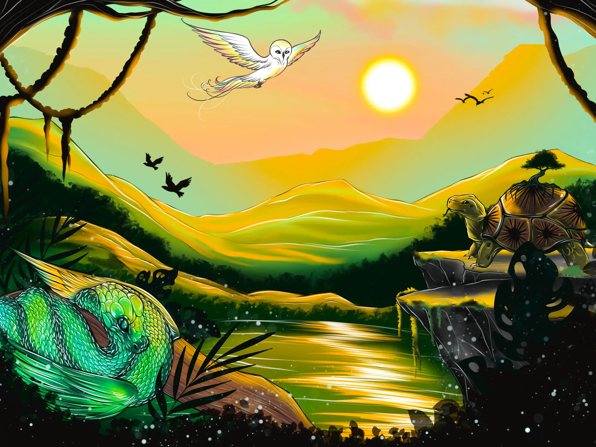

Pour poursuivre ta visite d’Arzankia, récolte un ingrédient magique !
Monde des Créatures Légendaires

« Vaste et indomptable, ce monde abrite des êtres extraordinaires, espèces rares et puissantes, qui règnent en maîtres sur des territoires interdits aux imprudents. »